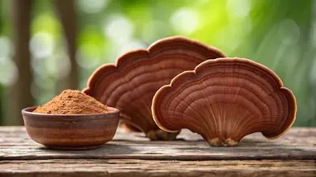

Élixirs naturels · 4 min de lecture
Élixir au Reishi : le rituel adaptogène sacré pour renforcer l’immunité, apaiser le mental et soutenir la longévité

Introduction
Surnommé depuis des siècles le champignon de l’immortalité, le reishi occupe une place à part dans les traditions ancestrales asiatiques.
Il n’était pas consommé comme un simple aliment, mais comme un véritable allié de longévité, réservé aux empereurs, aux moines et aux sages.
Dans nos sociétés modernes, où le stress chronique, la fatigue nerveuse et l’immunité fragilisée sont devenus courants, le reishi revient naturellement comme une réponse profonde, douce et intelligente.
Dans cet article, je te présente un élixir naturel à base de reishi, formulé avec une synergie d’ingrédients choisis pour créer une alchimie optimale pour la santé, l’équilibre nerveux et la vitalité à long terme.
👉 Je tiens à vous rappeler une règle d’or que j’aime beaucoup et qui guide mes choix au quotidien : si la nature ne l’a pas créé, ne le buvez pas.
Le problème
Beaucoup de personnes vivent aujourd’hui dans un état de fatigue silencieuse :
stress permanent,
sommeil peu réparateur,
immunité affaiblie,
inflammations de bas grade,
sensation d’être “à plat” sans raison apparente.
Les solutions rapides stimulent, mais n’apaisent pas.
Le corps n’a pas besoin d’un coup de fouet supplémentaire.
Il a besoin d’un soutien profond et régulateur.
La promesse
L’élixir au reishi agit comme un rééquilibrant global de l’organisme.
Il soutient le système immunitaire, apaise le mental, favorise la récupération et accompagne le corps vers une énergie plus stable, plus calme et plus durable.
Ce n’est pas un stimulant.
C’est un gardien de l’équilibre intérieur.
Les bénéfices
Une immunité plus forte et plus stable
Un mental apaisé et plus clair
Une meilleure résistance au stress
Un sommeil plus profond et réparateur
Un soutien global de la longévité
🌿 Pourquoi ce remède est efficace
Le reishi est un champignon adaptogène majeur.
Il agit sur plusieurs axes fondamentaux de la santé :
le système immunitaire,
le système nerveux,
l’inflammation,
la récupération cellulaire.
Il contient naturellement :
des bêta-glucanes (immunité),
des triterpènes (stress et inflammation),
des antioxydants puissants.
Associé à des ingrédients calmants et nourrissants comme la poire, la cannelle et l’eau chaude, le reishi devient plus assimilable, plus doux et parfaitement adapté à une consommation régulière.
👉 Il agit lentement, mais profondément.
💪 Les bienfaits de l’élixir au reishi
Renforcement du système immunitaire
Les bêta-glucanes soutiennent les défenses naturelles sans les surstimuler.Apaisement du stress et de l’anxiété
Le reishi favorise l’équilibre du système nerveux.Amélioration du sommeil
Il aide à calmer le mental et favorise un repos plus réparateur.Action anti-inflammatoire et antioxydante
Il protège les cellules du stress oxydatif.Soutien de la longévité
Utilisé régulièrement, il accompagne l’organisme vers un vieillissement plus harmonieux.
🍐 La recette de l’Élixir Calme & Immunité au Reishi
Ingrédients (alchimie optimale)
½ cuillère à café de poudre de reishi (ou extrait de qualité)
300 ml d’eau chaude (non bouillante)
½ poire mûre (fraîche ou cuite doucement)
½ cuillère à café de cannelle
1 cuillère à café de miel brut (optionnel)
Une pincée de vanille naturelle (optionnelle)
Pourquoi cette synergie fonctionne ?
Le reishi régule et protège.
La poire adoucit, hydrate et soutient les poumons.
La cannelle réchauffe et améliore l’assimilation.
Le miel nourrit et stabilise l’énergie.
La vanille favorise l’ancrage et la détente.
Préparation
Fais chauffer l’eau sans la faire bouillir.
Ajoute la poudre de reishi et la cannelle.
Mixe ou écrase la poire et incorpore-la.
Retire du feu et ajoute le miel et la vanille.
Bois chaud ou tiède, lentement.
⏰ Comment l’utiliser
À consommer 1 fois par jour, idéalement :
le soir,
ou en fin de journée pour favoriser le calme.
Peut être utilisé en cure de 3 à 6 semaines, avec pauses.
La régularité est essentielle pour ressentir les effets profonds.
👥 À qui s’adresse ce rituel
Aux personnes stressées ou anxieuses
À ceux qui dorment mal ou récupèrent difficilement
À ceux qui souhaitent renforcer leur immunité naturellement
Aux personnes fatiguées nerveusement
À toute personne cherchant un rituel de longévité et d’équilibre
⚠️ Précautions
Respecte les dosages : le reishi est puissant.
Déconseillé en cas de traitement anticoagulant sans avis médical.
Déconseillé aux femmes enceintes sans avis professionnel.
Choisis un reishi pur, bio et bien dosé.
🌱 Conclusion & appel à l’action
L’élixir au reishi n’est pas une solution rapide.
C’est un compagnon de fond, un soutien discret mais profond pour celles et ceux qui veulent bâtir une santé stable, calme et durable.
Il nous rappelle une vérité essentielle :
👉 la longévité commence par l’équilibre.
👉 Si la nature ne l’a pas créé, ne le buvez pas.
Je partage régulièrement des élixirs, rituels et ressources bien-être pour t’aider à nourrir ton corps, ton système nerveux et ton énergie vitale, naturellement.
📚 Je suis auteur bien-être sous le pseudo Chest0 JM.S., mes ouvrages sont disponibles sur Amazon.
🔗 Retrouve tout mon univers ici :
👉 https://linktr.ee/Chest00
👉 Si tu veux aller plus loin, découvre aussi notre
Plus de 40 recettes d'élixirs dans les livres Chest0.
Voir les livres